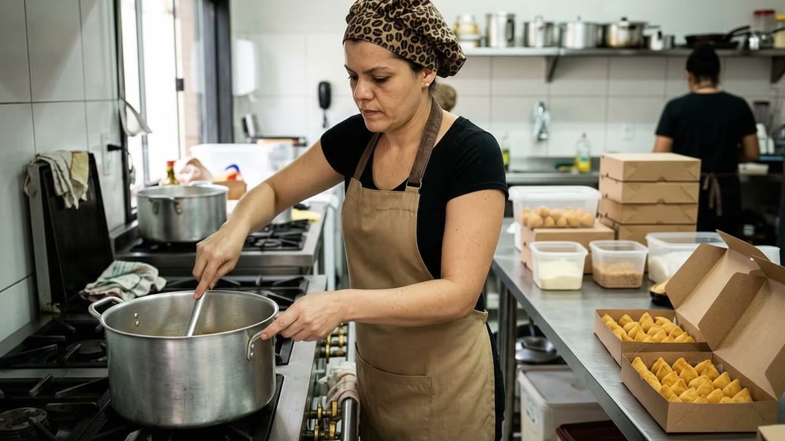
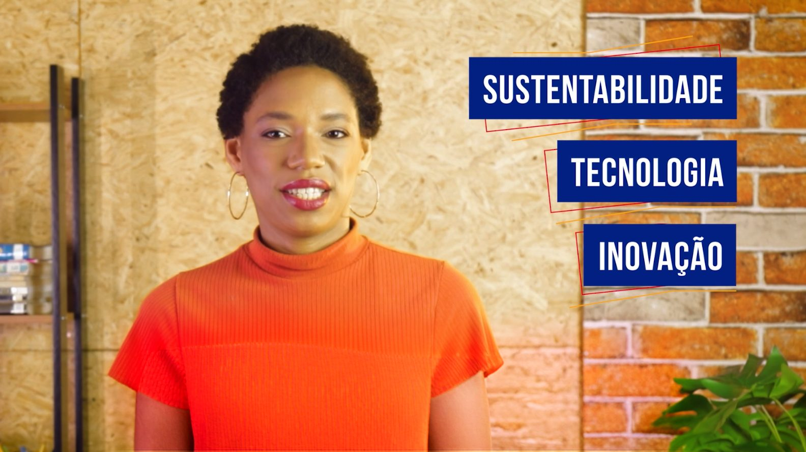
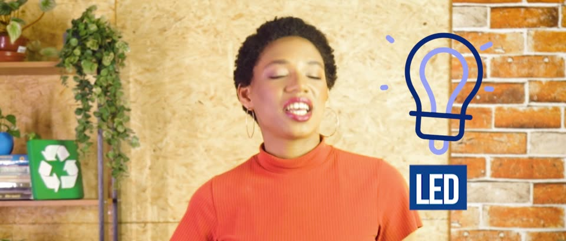

Vídeo gerado com IA
Prepare-se para asvendas de fim de ano
nov. 2026 · 6 min de leitura
Por: Manoela Leão
O curso Ideias que Transformam, da Academia Assaí, reúne quatro videoaulas gratuitas para empreendedores de alimentação, com certificado de conclusão.
Em dezembro, as encomendas se acumulam, o estoque aperta e o cliente quer pagar no Pix. Novembro é o mês de arrumar a casa para esse movimento, e o curso gratuito Ideias que Transformam, da Academia Assaí, reúne em quatro videoaulas curtas o que ajuda o empreendedor de alimentação a chegar às festas gastando menos e vendendo mais.
Acesse o cursoPublicidade

Um curso curto, gratuito e agora permanente na Academia Assaí
O Ideias que Transformam foi criado para a jornada de capacitação do Prêmio Academia Assaí 2025. A partir de novembro de 2026, o curso passa a fazer parte das capacitações fixas da Academia Assaí, aberto a qualquer empreendedor do setor de alimentação.
As aulas são breves: somadas, levam cerca de 23 minutos, menos de meia hora. Dá para assistir no intervalo entre um turno e outro e voltar ao conteúdo sempre que precisar. Junto com os vídeos, o curso oferece testes de conhecimento, materiais para baixar e certificado de conclusão. Todo o conteúdo é gratuito, inclusive o certificado.

Formato, duração e certificado
-
4 videoaulas breves e objetivas, com cerca de 23 minutos no total
-
Temas: sustentabilidade, tecnologia e inovação aplicadas ao negócio de alimentação
-
Testes de conhecimento ao longo do curso
-
Materiais para baixar
-
Certificado de conclusão
-
Tudo gratuito, inclusive o certificado
Conheça os temas das aulas
-
Abertura · Sua jornada começa aqui
Apresenta a jornada e os três temas do curso. O ponto de partida para olhar a gestão do negócio com outros olhos.
- 1
Aula 1 · Transformando o seu negócio com práticas sustentáveis
Como reduzir desperdício de alimentos, energia e embalagens e transformar isso em economia e em clientes mais fiéis.
- 2
Aula 2 · A tecnologia como aliada do seu negócio
Ferramentas simples e gratuitas para organizar pedidos, divulgar produtos e controlar o caixa.
- 3
Aula 3 · Como a inovação pode destacar seu negócio
Ideias acessíveis para criar diferenciais no produto, no atendimento e na experiência do cliente.


Aula 1
Sustentabilidade que reduz custos nas encomendas de fim de ano
- 1Diagnóstico
- 2Adaptação dos processos
- 3Comunicação com o cliente
- 4Acompanhamento dos resultados
Para muita gente, sustentabilidade parece assunto distante da rotina da cozinha. A aula do curso faz o caminho contrário e mostra que o desperdício de insumo, de energia e de embalagem sai direto do lucro. Em época de encomendas grandes, uma porção mal calculada se repete dezenas de vezes.
O conteúdo organiza o tema em quatro etapas: diagnóstico, adaptação dos processos, comunicação com o cliente e acompanhamento dos resultados. Na prática, isso inclui medir o que sobra antes de fechar as compras de dezembro, concentrar o uso do forno e de outros equipamentos de alta potência em horários específicos para gastar menos energia e rever as embalagens do delivery, com opções biodegradáveis, compostáveis ou retornáveis.
A aula também ensina a contar essas escolhas ao cliente, em vídeos curtos nas redes sociais ou no rótulo do produto. A pergunta “essa embalagem é reciclável?” aparece cada vez mais no balcão, e ter a resposta pronta ajuda a conquistar quem se importa com o tema.

Aula 2
Tecnologia para organizar pedidos, divulgar e receber nas festas
Dezembro é o mês em que o pedido anotado no papel some, a mensagem do cliente fica sem resposta e a venda escapa porque não havia maquininha. A aula de tecnologia apresenta ferramentas gratuitas ou de baixo custo em três frentes: gestão do tempo, comunicação e finanças.
Trello e Notion
Listas de encomendas com prazos e lembretes.
Google Agenda
Para não esquecer datas de entrega e conversas com fornecedores.
ChatGPT
Calcula quantidades de ingredientes, escreve descrições de produtos e analisa o histórico de vendas para prever o que sai mais em cada época do ano.
Canva
Posts e cardápios sem experiência em design.
Meta Business Suite e Later
Programam as publicações com antecedência.
WhatsApp Business
Respostas automáticas, catálogo e etiquetas para separar clientes.
Goomer
Cardápio digital acessado por QR Code.
Mercado Pago e PagSeguro
Recebem por Pix, boleto e cartão.
Mobills e Organizze
Controlam entradas e saídas.
Assim, em janeiro, dá para saber com clareza se as festas deram lucro.
Ninguém precisa adotar todas as ferramentas de uma vez: escolher uma e começar a testar já muda a rotina.

Aula 3
Inovação simples para se destacar no cardápio de fim de ano
A última aula desfaz uma ideia comum, a de que inovar exige muito dinheiro ou uma invenção complicada. O curso mostra que a inovação pode estar no produto, nos processos internos, no jeito de se comunicar e na experiência do cliente, e que a diversidade de pessoas e referências no negócio alimenta novas ideias.
No fim de ano, isso pode virar um produto especial da época, opções para públicos com necessidades específicas, como celíacos, diabéticos, vegetarianos e veganos, ou um cardápio mais interativo, com sugestões de harmonização e curiosidades sobre os pratos. Ingredientes regionais e formatos diferentes também ajudam a marca a ser lembrada na hora da encomenda.
Seu plano até dezembro
O que você quer melhorar no seu negócio antes do fim de ano?
Antes de dezembro, escolha uma ideia e comece
A recomendação do curso é começar pequeno: escolher uma ideia que faça sentido para o negócio, testar e acompanhar o resultado. Com as encomendas de fim de ano chegando, cada ajuste feito em novembro já trabalha a favor das vendas de dezembro.